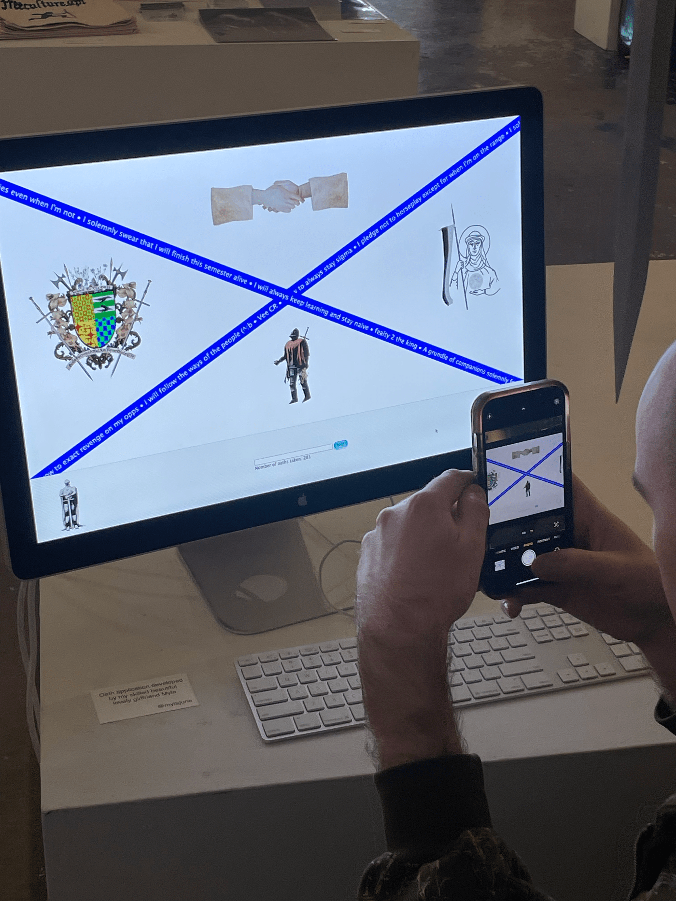
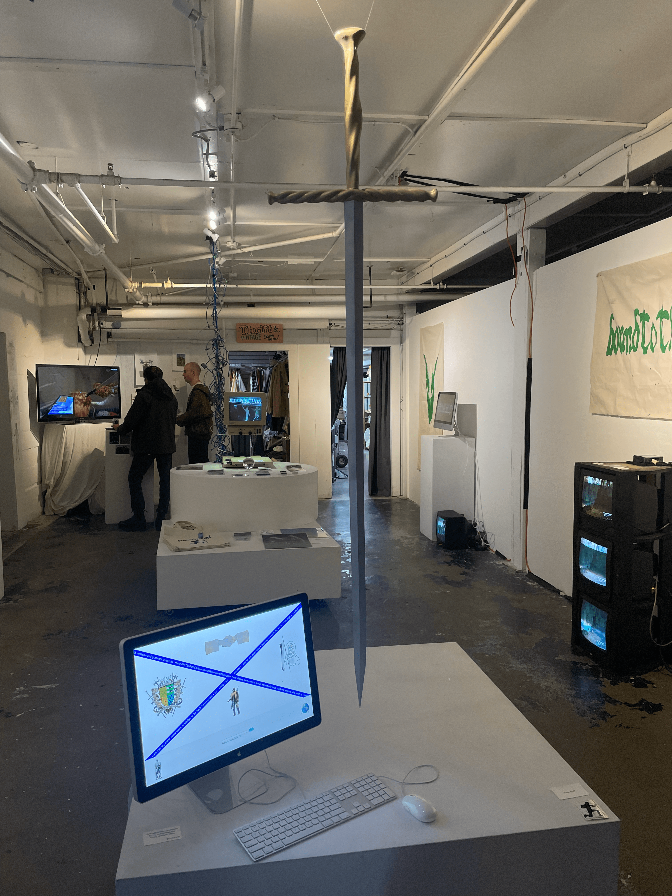
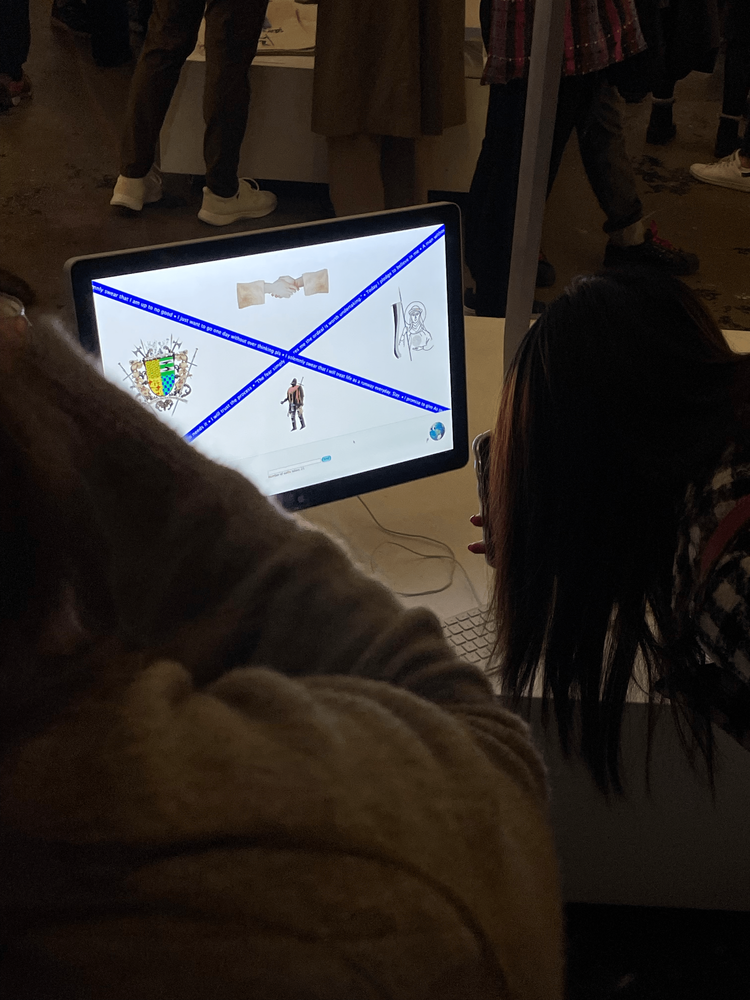

In November 2024, I programmed an "oath station" for visitors to freeculture.api’s show Bound To The Oath. At this station, visitors were invited to take a moment to reflect before entering an oath. The oaths entered over the course of the show scrolled across the webpage for other visitors to read.



Here are some of my favourite oaths entered at the station:
- I vow to pole dance into my 60’s
- I swear to express my creative energy when it wells up
- \"); DROP L\"%d, 25\"; "); DROP TABLE oaths;;
- I will break up with AM in Jan, 2025
- My oath is to myself. I will stay courageous in my vulnerability.
- I swear everytime i get a new vape i will plank for 20 seconds or 10 pushups
- I vow to see every bird
- I pledge to not overthink my oaths